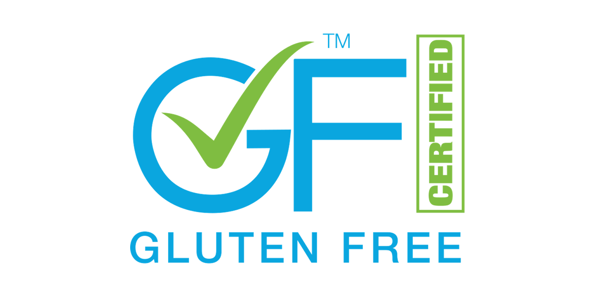

Certified Gluten Free: What the Seal on Your True Food Bag Means
What True Food's Gluten Free certification means, why a third party verifies it, and why it gives you peace of mind every time you choose us.
A seal doesn’t make anything taste better. That part is on us, every single day, and it always follows the same order: delicious, healthy and Gluten Free. First, it has to taste delicious. If it’s not delicious, it’s not True Food.
What a seal does do is give you peace of mind when you flip the package over and read the label. That’s why we want to tell you about the new seal you’ll now find on our packaging: GF Certified Gluten Free.

What is this certification?
It comes from the GFFP (Gluten-Free Food Program), a program that verifies that products labeled Gluten Free actually are. Its standard is 5 ppm, meaning 5 parts of gluten per million. Put simply: a tiny, tiny amount.
Gluten Free has always been part of who we are. The difference is that now it’s not just us saying so.
Why it matters that someone else checks
Any brand can put “Gluten Free” on a package. What changes things is having a third party, someone who doesn’t work with us and has no reason to make us look good, review and confirm that what we say is true.
Think of a friend recommending a restaurant. You believe them, of course. But if someone who really knows food, with nothing to gain, recommends it too, you believe it even more. That’s what a certification is worth: we’re not asking you to take our word for it. We’re showing you that someone else checked.
When we announced the certification, we kept it simple: we want people to feel completely at ease knowing we’re Gluten Free. That’s the whole point.
Peace of mind for those who need it
If someone in your home has to avoid gluten, you know what it’s like to read labels with a magnifying glass, ask twice, and still be left wondering. This seal is meant to make that doubt a little smaller every time you pick up one of our packages at the store.
Confidence for those who just love good food
And if you don’t have any medical reason, it’s for you too. A lot of people choose us because they want to feel good about what they eat, because they like knowing what’s behind what they buy, or simply because they loved the taste. Gluten isn’t the villain here. Choosing Gluten Free is a conscious decision, not a punishment. And when you make a choice like that, it’s good to know that what you bought is exactly what it says it is.
The certification isn’t a trophy or a medal. It’s backing. It’s our way of telling you we take what we offer you seriously, just as seriously as we take making it delicious.
It’s not our only seal
GF Certified joins two other certifications we already hold: BRCGS START and Kosher Parve. Each one is another layer of third-party backing for what we do, so the only thing you have to think about is how you’re going to enjoy it.
In the end, nothing changes
The seal backs up what we say. Everything else stays the same: delicious, healthy and Gluten Free, in that order.
Find us at Auto Mercado, Walmart, Más x Menos, MegaSuper, BM and Compre Bien